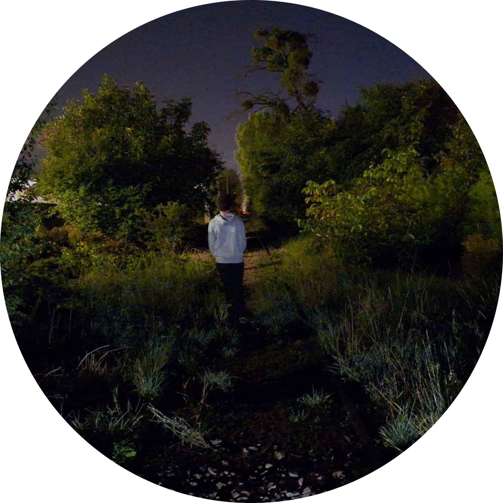

O mnie
Witaj na mojej stronie!
Nazywam się Adam Szczepkowicz, mam 15 lat. Od zawsze byłem ciekawy otaczającego mnie świata. W końcu, po latach mniej lub bardziej udanych prób literackich (część z was może kojarzyć mnie z #opiniamłodegoczytelnika), stworzyłem swoje miejsce w internecie, gdzie zamierzam dzielić się interesującymi mnie zagadnieniami. Będę pisać o historii, językach, ciekawostkach i o wszystkim, co przyjdzie mi do głowy. Każdy mój post jest od początku do końca przygotowywany przeze mnie, bez użycia AI.
Moje wpisy i projekty
Zbiór artykułów z bloga. Użyj wyszukiwarki, aby znaleźć interesujące Cię tematy.
Uriah Heep - "Lady in black". Interpretacja
20 Wrz 2026Interpretacja utworu Uriah Heep "Lady in Black"
Czytaj dalej na BloggerzePrzyszłe projekty
Nad czym obecnie pracuję i co planuję opublikować w najbliższym czasie.
Projekt 1
Główny projekt, nad którym pracuję.
Projekt 2
Poboczny projekt
Materiały dodatkowe
Pliki i zasoby przygotowane przeze mnie, dostępne do pobrania.
-
Pobierz plik
Starożytny Rzym - Prezentacja
Plik PDF • Prezentacja multimedialna